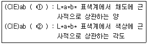
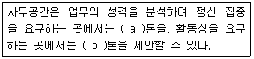

컬러리스트산업기사 (2002-12-08 기출문제)
1과목: 색채심리
1. 색채조절을 통해 이루어지는 내용이 아닌 것은?
- 신체의 피로 특히 눈의 피로를 막는다.
- 안전이 유지되며 사고가 줄어든다.
- 색채의 적용으로 주위가 산만해 질 수 있다.
- 정리정돈과 질서 있는 분위기가 연출 된다.
(정답률: 알수없음)

2. 톤 온 톤 배색효과에 대한 설명 중 틀린 것은?
- 같은 톤의 색상으로 유연하게 배색효과를 낸 것이다.
- 동일 색상으로 두가지 톤의 명도차를 비교적 크게 잡은 배색이다.
- 세가지 이상의 다색을 사용하는 같은 계열 색상의 농담 배색도 톤 온 톤 배색이다.
- 톤 온 톤 배색이란 톤을 겹치게 한다는 의미이다.
(정답률: 34%)
3. 다음 톤 배색 중 톤의 차이가 가장 많이 나는 배색은?
- vivid Blue - deep Green
- very pale Red - dark Red
- dull Yellow - light Blue
- dull Red - deep Green
(정답률: 알수없음)
4. 색채의 공감각에 대한 설명 중 틀린 것은?
- 색의 농담과 색조에서 색의 촉감을 느낄 수 있다.
- 소리의 높고 낮음은 색의 채도에 의해 가장 잘 표현된다.
- 색의 감각은 미각, 후각, 청각, 촉각 등과 함께 뇌에서 인식된다.
- 어둡고 칙칙한 계통의 색에서는 한약을 다릴 때와 같은 짙은 냄새가 난다.
(정답률: 알수없음)
5. 색채를 조절할 때 기능을 최고도로 발휘할 수 있도록 색을 선택 부여하는 효과와 비교적 관계가 먼 것은?
- 명시성
- 기억성
- 전달성
- 심미성
(정답률: 46%)
6. 색채에 대한, 심리 반응에 관한 설명 중 틀린 것은?
- 같은 색이라도 면적이 넓으면 채도가 높아 보인다.
- 색의 강약감은 채도에 의해 주로 좌우되며, vivid, strong, deep tone이 강한 느낌을 준다.
- 한쪽 벽면을 같은 톤의 난색계로 칠하면 한색계로 칠 했을 때보다 더 넓게 보인다.
- 명도가 높고 채도가 높은 색의 배색은 중후해 보인다.
(정답률: 84%)
7. 기후에 따른 일반적인 색채기호의 설명 중 틀린 것은?
- 라틴계 민족은 난색계를 좋아한다.
- 머리칼과 눈동자색이 검정이나 흑갈색의 민족은 한색계를 선호한다.
- 스페인, 라틴아메리카의 사람들은 난색계를 선호한다.
- 북구계의 게르만인과 스칸디나비아 민족은 한색계를 선호한다.
(정답률: 55%)
8. 오방색에 대한 설명 중 틀린 것은?
- 오방색이란 우리나라의 전통색채에서 사용되어 오던색이다.
- 오방색의 오정색은 적색, 녹색, 백색, 황색, 청색으로 각 방위에 따라 색이 정해져 있다.
- 오방색이란 음양오행사상에 근거한 색채문화로 오정색과 오간색이 있다.
- 오방색은 동서남북 및 중앙의 오방으로 이루어져 있다.
(정답률: 60%)
9. 사회 문화 정보로서 색이 활용된 예로 2002 한일 월드컵에서 '붉은 악마 응원단'의 빨간색은 다음 중 어떤 역할에 가장 크게 기여 하였는가?
- 국제적 표준색의 기능
- 사용자의 편의성
- 유대감의 형성과 감정의 고조
- 차별적인 연상효과
(정답률: 알수없음)
10. 노랑이 장애물이나 위험물의 경고에 많이 사용되는 이유가 아닌 것은?
- 국제적으로 쉽게 이해된다.
- 명시도가 높다.
- 사용자의 편의성을 높인다.
- 메시지 전달이 용이하다.
(정답률: 64%)
11. 색채의 심미성을 판단하는데 영향을 미치는 요소가 아닌것은?
- 색채의식
- 가치관
- 지식 정도
- 절대적 미의 기준
(정답률: 40%)
12. 하늘색(SKY blue) 블라우스와 코발트 블루(Cobalt blue)스커트를 입은 경우는 어떤 배색이라고 볼 수 있는가?
- 반대 색상 배색
- 톤 온 톤 배색
- 톤 인 톤 배색
- 세퍼레이션 배색
(정답률: 82%)
13. 다음 색채와 연상언어의 연결이 잘못된 것은?
- 노랑색 - 위험, 혁명, 환희,
- 녹색 - 안정, 평화, 지성
- 파랑색 - 명상, 냉정, 영원
- 보라색 - 창조, 우아, 신비
(정답률: 알수없음)
14. 사회 문화정보로서의 색은 시대 문화에 따라 다르게 적용되는 경우가 있다. 다음 중 종교, 전통의식, 신화, 예술등에서 상징적인 연결이 잘못된 것은?
- 노란색 - 동양문화권에서 신성한 색채
- 노란색 - 서양문화권에서 겁쟁이, 배신자
- 흰색 - 서양문화권에서 장례식
- 청색 - 기독교, 천주교
(정답률: 알수없음)
15. 세퍼레이션 컬러(separation color)는 흑색 윤곽이 있으므로 더 이상적인 조화가 이루어 진다는 주장이다. 이와 관계가 있는 것은?
- 보색배색
- 저드의 색채 조화론
- 만화영화나 캐릭터 일러스트
- 파버 비렌의 조화론
(정답률: 42%)
16. 동서양을 막론하고 권력의 상징과 기호로 주로 사용되었던 색이 아닌 것은?
- 푸른색
- 붉은색
- 황금색
- 자색
(정답률: 알수없음)
17. 안전 색채 설계시 빨간색이나 파란색 표지판이 있는 곳에 시야각이 넓은 흰색 경고판은 삼가해야 한다. 흰색으로 인해 유채색의 경고판이 어둡게 보이기 때문이다. 이는 다음 중 어떤 현상이 크게 작용하기 때문인가?
- 잔상효과
- 연상효과
- 동화효과
- 상징효과
(정답률: 50%)
18. 다음 주관색(subjective colors)에 대한 설명 중 올바른 것은?
- 지역과 풍토에 의한 색의 경험
- 빛의 물리적 특성에 의한 색의 경험
- 면적의 크기에 따라서 색이 달리 보이는 경우
- 흑백의 반짝임을 느끼게 하면 무채색의 자극 밖에 없는데서 유채색이 보이는 경우
(정답률: 알수없음)
19. 향의 감각은 특정 색채의 이미지로 연상된다. 다음 모리스 데리베레의 향과 색채의 공감각에 대한 연구 내용 중 올바른 것은?
- mint향 - green
- camphor 향 - rose
- floral 향 - light blue
- musk 향 - white
(정답률: 59%)
20. 오스굿이 제안한 의미 공간에 속하지 않는 것은?
- 좋다 - 나쁘다
- 크다 - 작다
- 빠르다 - 느리다
- 선명하다 - 약하다
(정답률: 75%)
2과목: 색채디자인
21. 다음 디지털 색채에 관한 설명 중 맞는 것은?
- 아날로그 방식이란 데이터를 0과 1의 두가지 상태로만 생성, 저장, 처리, 출력 전송하는 전자기술이다.
- 디지털 방식은 전류, 전압 등과 같이 물리량을 이용하여 어떤 값을 표현하거나 측정하는 것이다.
- 디지털 색채는 물감, 파스텔, 염료 등 물리적 또는 화학적으로 활용하여 색을 구사하는 방식이다.
- 디지털 색채는 R.G.B를 이용한 색채 영상을 디스플레이하는 디지털 색채와 C.M.Y.K를 이용 프린트 하는 디지털 색채가 있다.
(정답률: 90%)
22. 디자인 사조에서 대표적으로 사용된 색채의 특성에 관한 설명 중 잘못된 것은 ?
- 다다이즘의 색은 화려한 면과 어두운 면을 동시에 갖고 있으면서, 극단적인 원색대비를 사용하기도 한다.
- 아르누보는 큐비즘의 영향을 받아, 차분하고 자연적인 색채를 사용하며, 공간적이고 입체적인 색채의 효과를 강조한다.
- 옵아트는 색의 원근감, 진출감을 흑과 백 또는 단일 색조를 강조하여 사용한다.
- 팝아트는 복제성과 보편성을 강조하기 위하여 전체적으로 어두운 색조에 혼란한 강조색을 사용한다.
(정답률: 40%)
23. 건물의 도색이나 벽지를 선정할 때 사용하는 색채샘플(Sample)에서는 명도나 채도를 실제보다 낮추어서 고려하는 것이 바람직하다. 이는 색채의 무슨 현상 때문인가?
- 동화 현상
- 면적 효과
- 색채 대비효과
- 착시 효과
(정답률: 알수없음)
24. 다음 중 패션디자인의 요소와 비교적 거리가 가장 먼 것은?
- 장식미
- 기능미
- 재료미
- 색채미
(정답률: 알수없음)
25. 사진, 기록, 녹음, 대화 등을 통해 색채를 분석하는 시장조사 기법은?
- 문헌조사법
- 임의추출법
- 관찰법
- 실험법
(정답률: 알수없음)
26. 무대디자인에 있어서 무대의 종류가 아닌 것은?
- 가설무대
- 개방무대
- 회전무대
- 만사무대
(정답률: 46%)
27. 다음 중 훌륭한 디자인으로 평가받기 위한 조건과 거리가 먼 것은?
- 경제성
- 다양성
- 독창성
- 합목적성
(정답률: 58%)
28. 공공기관이나 기업이 제품의 질을 높이기 위한 정책의 일환으로 디자인이 잘된 제품에 부여하는 마크는?
- KS Mark
- GD Mark
- Green Mark
- Symbol Mark
(정답률: 알수없음)
29. 여러 세대를 거치면서 형태의 세련과 사용상의 개선이 이루어져 나타난 인간중심의 디자인을 나타내는 디자인 요건은?
- 친자연성
- 독창성
- 합리성
- 문화성
(정답률: 64%)
30. 다음 중 환경디자인의 영역과 거리가 먼 것은?
- 실내디자인
- 디스플레이디자인
- 건축디자인
- 패키지디자인
(정답률: 알수없음)
31. 다음 중 환경디자인의 영역에 속하지 않는 것은?
- 도시계획
- 건축디자인
- 인테리어 디자인
- 운송수단 디자인
(정답률: 알수없음)
32. 다음 중 디자인 이라는 용어의 어원으로 볼 수 있는 것은?
- 드로잉
- 마스킹
- 데생
- 칼라링
(정답률: 알수없음)
33. 병치 보색현상을 도입한 점묘화법으로 대표되며, 최초로 색채를 도구화한 미술 사조는?
- 인상파
- 야수파
- 큐비즘
- 아르누보
(정답률: 31%)
34. 색채계획을 위한 이미지 분석법으로 가장 널리 사용되는 방법은?
- 군집 분석법
- MDS
- SD법
- 판별분석법
(정답률: 알수없음)
35. 미용 디자인의 연출을 위해서 고려하는 개인 고유의 신체 색에 해당되는 것끼리 연결된 것은?
- 피부-눈동자-모발
- 피부-모세혈관-모발
- 모발-손톱-치아
- 치아-눈동자-손톱
(정답률: 90%)
36. 마케팅의 가장 기초는 인간의 욕구이다. 매슬로우(Maslow)는 이러한 인간의 욕구를 다섯 계층으로 구분하였다. 잘못 설명된 것은?
- 자아실현 욕구 - 자아개발의 실현
- 생리적 욕구 - 배고픔, 갈증
- 사회적 욕구 - 자존심, 인식, 지위
- 안전 욕구 - 안전, 보호
(정답률: 알수없음)
37. 멀리서도 위치를 알 수 있는 산, 고층빌딩, 타워, 기념물등 그 지역의 상징물을 나타내는 환경디자인 용어는?
- 아고라
- 캐스케이드
- 파사드
- 랜드마크
(정답률: 알수없음)
38. 19세기 말에서 20세기 초에 일어났던 양식운동으로서 자연물의 유기적 형태를 빌려 건축의 외관이나 가구, 조명, 실내 장식, 회화, 포스터 등을 장식할 때 사용 되었던 양식은?
- 아르누보(Art Nouveau)
- 미술 공예운동(Art and Craft Movement)
- 디 스틸(De Stijl)
- 모더니즘(Modernism)
(정답률: 57%)
39. 색채 계획 및 배색의 과정에서 사용하는 배색 방법에 대한 설명 중 가장 부적절한 것은?
- 주조색이란 전체의 느낌을 전달하는 색으로, 전체의 40% 이상을 차지하는 색을 말한다.
- 보조색은 주조색 다음으로 넓은 공간을 차지하며, 약 25% 정도의 면적을 차지한다.
- 보조색은 보조요소들을 배합색으로 취급함으로서, 변화를 주는 역할을 한다.
- 강조색은 디자인 대상에 액센트를 주는 포인트 역할을 하는 색으로, 전체의 5% 정도를 차지한다.
(정답률: 55%)
40. 제품색채계획 단계의 순서가 올바른 것은?
- 시장,소비자 조사→ 색채계획서 작성→ 시제품 제작 → 주조색,보조색,강조색 결정
- 시장,소비자 조사→ 시제품 제작→ 소재 및 재질 결정→ 색채계획서 작성
- 시장,소비자 조사→ 색채계획서 작성→ 주조색,보조색, 강조색 결정→ 소재 및 재질 결정
- 시제품 제작→ 소재 및 재질 결정→ 색채계획서 작성 → 주조색,보조색,강조색 결정
(정답률: 80%)
3과목: 섹채관리
41. 조색사가 색료를 선택할 때 고려해야 할 조건과 가장 거리가 먼 것은?
- 착색의 견뢰성(물리환경적인 조건에서 견디는 성질)
- 다양한 광원에서의 색채현시(color appearance)
- 작업공정의 가능성
- 분해시 발생할 물질 및 분광식색채계의 성능
(정답률: 64%)
42. 소프트웨어와 정밀측정기기를 사용하여 색을 자동 배색하는 장치는?
- CCD(Charge Coupled device)
- CCM(Computer Color Matching)
- CII(Color Index International)
- ICC(International Color Consortium)
(정답률: 60%)
43. 어떤 색채가 매체, 주변색, 광원, 조도 등이 서로 다른 환경에서 관찰될 때, 다르게 보여지는 현상은?
- 색영역 맵핑(color gamut mapping) 현상
- 광 불일치(light inconsistency) 현상
- 메타메리즘(metamerism) 현상
- 컬러 어피어런스(color appearance) 현상
(정답률: 59%)
44. KS A 3502 규격의 안전색 표시사항 중 녹색에 해당되지 않는 것은?
- 안전
- 진행
- 정지
- 위생·구호
(정답률: 46%)
45. 육안 조색에 있어서의 색채 조절시 유의할 점과 가장 거리가 먼 것은?
- CCM소프트웨어의 준비 정도
- 채도의 차이
- 색상의 방향과 정도
- 명도의 차이
(정답률: 94%)
46. 해상도에 대한 바른 설명은?
- 해상도가 이미지에 필요한 만큼 충족되면 픽셀화가 된다.
- 픽셀의 수는 이미지의 선명도와 질을 좌우한다.
- 비트 해상도는 각 픽셀에 저장되는 컬러 정보의 양과 관련없다.
- 사진의 이미지를 확대해 보면 거칠어 지는데 이는 해상도가 높아졌기 때문이다.
(정답률: 80%)
47. 다음 중 프린트되는 디지털 색채가 아닌 것은?
- RED
- MAGENTA
- CYAN
- YELLOW
(정답률: 84%)
48. 다음 중 한국산업규격(KS)이 정한 안전색의 일반적 사항 중에서 통로의 표시, 방향지시, 정돈이나 청결을 필요로 하는 개소에 사용하는 색깔은?
- 빨강
- 검정
- 흰색
- 녹색
(정답률: 60%)
49. 광원에 대한 설명이다. 틀린 것은?
- 낮은 색온도는 따뜻한 색에 대응되고 높은 색온도는 시원한 색에 대응된다.
- 주광색 형광등은 연색성이 낮아 병원복도, 경기조명, 식료품매장 등에 적합하다.
- 인공 광원이 얼마나 기준광과 비슷하게 물체의 색을 보여주는가를 나타내는 것이 연색지수이다.
- 백열등과 같이 뜨거워져서 빛을 내는 열광원은 흑체의 색온도로 구분하고 열광원이 아닌 경우에는 상관 색온도로 구분한다.
(정답률: 알수없음)
50. 색재(Colorant)의 일반적인 사항에 관한 설명이다. 맞는 것은?
- 색재는 염료와 도료 및 첨가제로 구분한다.
- 염료와 안료는 용매에 분해된다.
- 안료는 가는 분말의 형태로 사용되며, 불투명하다.
- 염료는 액체이며 불투명하고 산화철, 산화망간, 목탄 등이 이에 해당된다.
(정답률: 62%)
51. 다음은 흑체에 대한 설명이다. 틀린 것은?
- 흑체란 외부의 에너지를 모두 반사하는 이론적인 물체이다.
- 반사가 전혀 일어나지 않으므로 이를 상징하여 흑체라고 한다.
- 흑체가 에너지를 흡수하면 물체는 뜨거워진다.
- 흑체는 비교적 저온에서는 붉은 색을 띈다.
(정답률: 64%)
52. 한국산업규격(KS)에서 정한 다음 용어 ①과 ②는 무엇을 뜻하는가?

- ① 크로마 ② 채도
- ① 크로마 ② 색상각
- ① 색상 ② 크로마
- ① 색상각 ② 크로마
(정답률: 86%)
53. 색채의 측정에 관한 설명 중 틀린 것은?
- 색채 측정은 객관적인 색채값의 지정과 관리 측면에서 중요한 역할을 한다.
- 객관적인 색채의 측정은 색채계(color meter)를 이용한다.
- 국제적인 측정표준과 색채 표시 기준이 설정되어 있어 이를 기준으로 색채 측정이 이루어진다.
- 색채계보다는 눈으로의 측색이 편차요인이 없다.
(정답률: 73%)
54. 페인트(도료)의 4대 기본 구성 성분과 가장 거리가 먼 것은?
- 안료(Pigment)
- 수지(Resin)
- 용제(Solvent)
- 경화제
(정답률: 알수없음)
55. 색채측정에서의 측정조건이 0/d SPEX(specular excluded)로 표기되었을 때 그 의미는 ?
- 시료의 수직방향으로 빛이 입사되고 확산된 빛만을 측정한다.
- 시료의 수직방향으로 빛이 입사되고 확산된 빛과 광택을 포함하여 측정한다.
- 시료의 수평방향으로 빛이 입사하여 되돌아오는 빛만을 측정한다.
- 시료의 수평방향으로 빛이 입사되고 확산된 빛을 특정장비(SPEX)로 측정한다.
(정답률: 28%)
56. 다음은 안료를 합성하는 조건들이다. 이중 착색도, 불투명도, 점도, 굴절율, 빛의 산란과 흡수 등에 가장 많은 영향을 주는 것은?
- 안료의 색상 및 반응조건
- 건조조건
- 안료입자의 크기
- 희석제의 종류
(정답률: 42%)
57. 다음 중 염료와 안료에 대하여 옳게 설명한 것은 ?
- 염료는 주로 물에 잘 녹지 않고 안료는 잘 녹는다.
- 일반 페인트는 주로 안료를 사용하지만, 수성페인트는 염료를 쓴다.
- 컬러프린터의 인쇄잉크는 염료이고 레이저 토너는 안료이다.
- 염료는 화학적 반응을 통하여 흡착하고 안료는 접착제를 쓴다.
(정답률: 20%)
58. 디스플레이 모니터 내에 포함되어 있는 화소의 숫자를 말하는 것은?
- ppi(pixels per inch)
- dpi(dots per inch)
- lpi(line per inch)
- 디멘션(dimensions)
(정답률: 46%)
59. 가장 일반적으로 사용되는 인쇄잉크는?
- Magenta, Yellow, Green, Blue
- Red, Yellow, Blue, Cyan
- Magenta, Yellow, Cyan, Black
- Red, Pink, Blue, Black
(정답률: 알수없음)
60. 물체의 색을 측정하는 방법 중 같은 결과를 얻는 방법을 서로 짝지은 것이다. 맞는 것은?
- d/0-0/90
- d/0-45/0
- 0/d-0/45
- 45/0-0/45
(정답률: 알수없음)
4과목: 색채지각의이해
61. 백색광을 노란색 필터에 통과시킬 때 통과되지 않는 파장은?
- 장파장
- 중파장
- 단파장
- 적외선
(정답률: 40%)
62. 다음 색 중 가장 따뜻하게 느껴지는 색은 ?
- 주황
- 초록
- 자주
- 보라
(정답률: 80%)
63. 물체 내부의 시각색소가 흡수하는 빛의 양을 파장별 함수로 나타낸 것은?
- 흡수스펙트럼
- 반사스펙트럼
- 굴절스펙트럼
- 확산스펙트럼
(정답률: 50%)
64. 다음 명도대비에 대한 설명 중 틀린 것은?
- 명도대비는 명도의 차이가 클수록 더욱 뚜렷하다.
- 유채색보다 무채색이 더욱더 강하게 나타난다.
- 명도가 다른 두 색을 인접했을 때 밝은색은 더욱 밝아 보인다.
- 색채가 검정바탕에서 가장 어둡게 보이고 하얀바탕에서 가장 밝게 보인다.
(정답률: 55%)
65. 명소시와 암소시의 중간 정도의 밝기에서 추상체와 간상체 모두 활동하고 있는 시각상태는?
- 잔상시
- 유도시
- 중간시
- 박명시
(정답률: 80%)
66. 보색에 관한 다음 설명 중 틀린 것은?
- 혼합하여 무채색이 되는 두 색은 서로 보색관계에 있다
- 색료혼합의 경우 보색관계에 있는 두 색의 혼합 결과는 검정에 가깝다.
- 혼색에서 모든 2차색은 그 색에 포함되지 않은 원색과 보색관계에 있다.
- 색상환에서 비교적 가까운 거리에 있는 색을 보색이라 한다.
(정답률: 73%)
67. 색들끼리 서로 영향을 주어서 인접색에 가까운 것으로 느껴지는 현상은?
- 계시효과
- 동시효과
- 면적효과
- 동화효과
(정답률: 64%)
68. 두 색을 동시에 인접시켜 놓았을 때 두 색의 채도차가 크게나는 현상은?
- 색상대비
- 명도대비
- 채도대비
- 보색대비
(정답률: 60%)
69. 실제보다 날씬해 보이려면 어떤 색의 옷을 입는 것이 좋은가?
- 따뜻한 색
- 밝은 색
- 어두운 무채색
- 채도가 높은 색
(정답률: 알수없음)
70. 색의 온도감에 가장 큰 영향을 미치는 색의 속성은?
- 명도
- 색상
- 채도
- 항상성
(정답률: 알수없음)
71. 정상적인 눈의 경우 추상체(원뿔세포)는 그 흡수 스펙트럼에 따라 몇가지로 구분 되는가?
- 1가지
- 2가지
- 3가지
- 4가지
(정답률: 알수없음)
72. 다음 중 가법혼색이 아닌 것은?
- 동시혼색
- 계시혼색
- 병치혼색
- 동화혼색
(정답률: 54%)
73. NCS시스템에서 빨강(Red)의 대응색은?
- 백색(White)
- 파랑(Blue)
- 노랑(Yellow)
- 녹색(Green)
(정답률: 67%)
74. 다음 내용 중 괄호 안에 들어갈 용어로 맞는 것은?

- a 난색, b 한색
- a 한색, b 난색
- a 고명도, b 저채도
- a 고채도, b 저명도
(정답률: 70%)
75. 다음 배색 중 명시도가 가장 높은 것은?
- 검정색 바탕 위의 노란색
- 검정색 바탕 위의 청색
- 흰색 바탕 위의 노란색
- 흰색 바탕 위의 청색
(정답률: 알수없음)
76. 다음 감법혼합 중 틀린 것은?
- 마젠타 + 노랑 = 빨강
- 파랑 + 빨강 = 주황
- 시안 + 마젠타 = 파랑
- 노랑 + 시안 + 마젠타 = 검정
(정답률: 90%)
77. 다음 내용 중 맞는 것은?
- 간상체는 약한 빛에서 활동한다.
- 간상체는 유채색을 지각할 수 있다.
- 추상체는 망막 주변부에 많이, 고르게 분포한다.
- 추상체에 의한 순응이 간상체에 의한 것보다 늦다.
(정답률: 20%)
78. 중간혼색에 관한 설명 중 잘못된 것은?
- 색을 인접되게 배치하여 혼합된 색으로 보이게 하는 것이다.
- 컬러인쇄는 중간혼색을 사용한다.
- 감법혼색의 영역에 속한다.
- 중간혼색의 예로 베졸드효과를 들 수 있다.
(정답률: 알수없음)
79. 백색광이 물체에 비추어졌을 때 물체가 600nm∼700nm의 빛을 흡수하고 나머지를 반사시켰다면 이 물체는 다음 중 어떤 색에 가장 가깝게 보이겠는가?
- 빨간색
- 청록색
- 자주색
- 주황색
(정답률: 알수없음)
80. 다음 중 인간의 눈으로 식별할 수 있는 것은?
- 가시광선
- 감마선
- 우주선
- 적외선
(정답률: 60%)
5과목: 색채체계의이해
81. 색각의 생리· 심리원색을 바탕으로 하는 오스트발트 표색계에서 사용하는 색채표시 방법은?
- S2030-Y90R
- 20lc
- 4YR4/10
- 3:yR
(정답률: 17%)
82. 오스트발트의 색채조화원리가 아닌 것은?
- 등백계열의 조화
- 등흑계열의 조화
- 등보계열의 조화
- 등가색환의 조화
(정답률: 60%)
83. 다음 중 오스트발트 표색계의 색입체를 구성하는 기본 색상의 수는?
- 10
- 18
- 24
- 40
(정답률: 알수없음)
84. 파버 비렌(Faber Birren)의 색채조화 원리가 아닌 것은?
- 색삼각형의 연속된 선상에 위치한 색들은 서로 조화 한다.
- 오스트발트의 조화론과 매우 유사하나 색삼각형을 색채군으로 묶어 단순하게 표현하였다.
- 색채의 미적 효과를 나타내는 용어는 White, Black, Tone의 세가지이다.
- 비렌의 색삼각형을 쉽게 접근하기 위해 만든 것이 일본 PCCS 의 휴/톤 시스템이다.
(정답률: 73%)
85. 가법혼색의 원리를 적용시킨 표색계는?
- 먼셀표색계
- RAL표색계
- NCS표색계
- XYZ표색계
(정답률: 알수없음)
86. 색공간 읽는 법으로 맞는 것은?
- L*a*b*색공간에서 L*는 채도, a*와 b*는 색도좌표를 나타낸다.
- +a*는 빨간색 방향 +b*는 파란색 방향이다.
- 중앙은 완전 백색이다.
- +a*는 빨간색 방향, -a*는 노란색 방향이다.
(정답률: 46%)
87. 현재 우리나라에서 채택하고 있는 한국산업규격 표기법은?
- 먼셀 표색계
- 오스트발트 표색계
- 문-스펜서 표색계
- 게리트슨 시스템
(정답률: 알수없음)
88. 다음 중 혼색계의 설명으로 맞는 것은?
- 심리· 물리적인 빛의 혼색실험에 기초를 둔 표색계이다.
- 먼셀 표색계가 가장 대표적인 것이다.
- 물체의 색채를 표시하는 체계로 표준색표의 번호나 기호를 붙인다.
- 색지각의 심리적인 속성인 색상, 명도, 채도에 따라 행해지는 체계이다.
(정답률: 알수없음)
89. 저드의 색채조화 원리가 아닌 것은 ?
- 질서의 원리
- 유사의 원리
- 동류의 원리
- 변화의 원리
(정답률: 39%)
90. 음양오행설에서 볼 때 오정색 중 백색이 의미하는 방위는 ?
- 동
- 서
- 남
- 북
(정답률: 알수없음)
91. 먼셀은 색채조화의 기본을 균형으로 생각하였다. 먼셀이 제시한 균형의 원리에 근거할 때, 부조화의 경우는?
- 회색스케일(gray scale)의 그라데이션(gradation)
- 하나의 색상에 백색이나 검정을 섞어 만든 색들
- 채도는 같고 명도가 다른 반대색들이 회색스케일에 따라 일정 간격으로 변화할 때
- 중간명도의 반대색들로 낮은 채도의 면적을 작게 하고, 높은 채도의 면적은 크게 할 때
(정답률: 47%)
92. 먼셀 색입체를 수평으로 절단하면 중심축의 회색 주위에 나타나는 모양은?
- 같은 명도의 여러 색상
- 같은 채도의 여러 색상
- 같은 색상의 채도 변화
- 같은 색상의 같은 채도
(정답률: 알수없음)
93. 다음 중 대표적인 현색계가 아닌 것은?
- Munsell색체계
- CIE표준 표색계
- DIN색표계
- NCS색체계
(정답률: 40%)
94. 먼셀색상에서 5R보다 큰 수의 빨강(7.5R 등)의 설명으로 가장 올바른 것은 ?
- 노란색을 띤 빨강이다.
- 자주색을 띤 빨강이다.
- 샛 빨강을 뜻한다.
- 연한 빨강을 뜻한다.
(정답률: 28%)
95. 다음 중 기본 색명에 수식어를 붙여 표현하는 색명법은?
- 고유색명
- 관용색명
- 계통색명
- 생활색명
(정답률: 60%)
96. S3020-Y90R에 대한 해석으로 맞는 것은?
- 대상색에서 유채색도가 50%의 비율
- 대상색에서 검정색도가 30%의 비율
- 대상색에서 하양색도가 20%의 비율
- 유채색도c에서 노랑은 90%, 빨강은 10%의 비율
(정답률: 알수없음)
97. 색의 배색에서 색채의 면적이 미치는 영향을 고려하여 "저채도의 약한 색은 면적을 넓게, 고 채도의 강한 색은 면적을 좁게 해야 균형이 맞는다"는 원칙을 정량적으로 이론화한 색채조화 론은?
- 문· 스펜서(Moon· Spencer)의 색채조화론
- 오스트발트(Ostwald)의 색채조화론
- 저드(Judd)의 색채조화론
- 쉐뷰럴(Chevreul)의 색채조화론
(정답률: 55%)
98. 다음 중 먼셀(Munsell) 3속성에 의한 표시 기호 1.5Y 5.0/5.5 와 가장 같은 관용 색명은?
- 개나리색(Chrome Yellow)
- 세피아(Sepia)
- 황토색(Yellow Ochre)
- 카키(Khaki)
(정답률: 알수없음)
99. 오스트발트 색채조화론의 기본 개념은 ?
- 조화란 유사한 것을 말한다.
- 조화란 질서가 있을 때 나타난다.
- 조화는 대비와 같다.
- 조화란 중심을 향하는 운동이다.
(정답률: 82%)
100. 한국산업규격의 계통색명과 그 약호가 바르게 표시된 것은?
- 어두운 녹색 띤 노랑 : dk-gY
- 회보라 : n-PB
- 아주 어두운 남색 : vb-B
- 해맑은 파랑 띤 흰색 : st-nBW
(정답률: 60%)